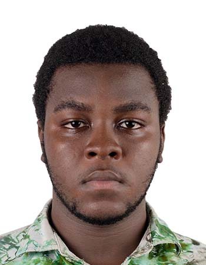

Étudiant en CPGE-MPI au 2iE | Passionné par technologie, IA, art et innovation
Étudiant en classe préparatoire MPI à l’Institut 2iE, passionné par l’informatique, l’IA et la cybersécurité. Mon objectif : concevoir des solutions intelligentes à fort impact social et environnemental.
Ancien président du club d’art oratoire et membre actif des 2iE Volunteers, je combine rigueur scientifique, créativité et leadership.
Premier prix + prix “Meilleur impact social & environnemental” avec SG-KOOM.
Premier prix avec YILGA SmartLayers, IA pour l’agriculture.
Entrée au 2iE, poursuite de ma passion pour la science et la technologie.
Développement du leadership, communication, rédaction créative et participation active aux débats régionaux de la CEDEAO.
💼 GitHub
📞 +226 74 92 89 78